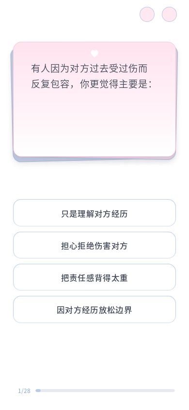

题号字号 +30%；与进度条间距 +15%，从 10px 增至 11.5px。底卡混入约 25% 白色，仍保留蓝灰与暗粉层次。每个选项高度 +5%，右下添加边缘清楚、外层柔和的蓝色软阴影。
验证：十视口、全部 96 题共 960 组通过；短／长选项高度比例、题号字号与间距、文字完整、边缘对齐、无重叠、进度可达、重复 resize 稳定。选答层叠动画与换题通过；实际推进至第 8 题并保存 8/28 预览。200% 字体下 C10、C24、C02、A21 完整阅读通过。

查看 8/28 题号效果 · 布局验证数据 · 200% 字体验证
本轮只调整答题页 CSS 与项目说明；题目 Markdown、运行 JSON、共享 CSS、HTML、布局和答题脚本哈希未变。